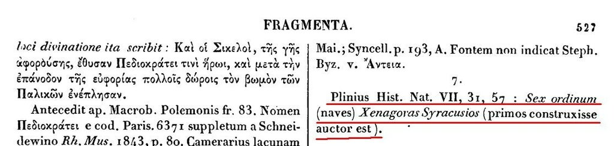

Cimba (1470-1789), Lembo (античность - 1783), Leudo (1215 – до наших дней)
После бригантин, каравелл и каракк, которые на слуху у всех, кто хоть немного соприкасался с морской историей, названия вынесенных в заголовок кораблей мало что говорят неспециалисту. Хотя и коренятся они в глубине веков. Начнем знакомство с этой интересной группой с lembo.
Лембо (lembo), или лембос (лемб, как его переводит на русский язык словарь Дворецкого) как тип корабля встречается очень часто в лигурийских документах. Но вообще-то это очень давний термин, который использовался еще древними греками (λέμβος) и римлянами (lembus).
Этот термин означал родовое понятие для нескольких видов малых кораблей
1) корабельных шлюпок;
2) портовых судов;
3) рыболовецких судов;
4) и, наконец, речных судов.
Приведем несколько отрывков из классических источников, чтобы подтвердить обоснованность этих заключений.
1) Демосфен (около 384 - 322 гг. до н.э.), древнегреческий оратор и политический деятель, в приписываемой ему речи (XXXIV – Против Формиона) говорит:
προσανέλαβεν ἐπὶ τὸ κατάστρωμα χιλίας βύρσας, ὅθεν καὶ ἡ διαφθορὰ τῇ νηὶ συνέβη. καὶ αὐτὸς μὲν ἀπεσώθη ἐν τῷ λέμβῳ μετὰ τῶν ἄλλων παίδων τῶν Δίωνος,
10. Итак, после этого, афиняне, он остался на Боспоре, а Лампид, выйдя в море, потерпел кораблекрушение недалеко от порта. Ведь несмотря на то, что корабль уже был нагружен, как мы слышали, больше чем следует, он взял еще вдобавок на палубу тысячу шкур, отчего и произошло с кораблем крушение. И сам он спасся в лодке с остальными рабами Диона, погибло же больше тридцати свободных, не считая всего остального.
Демосфен. Речи. В трех томах, 1994. (Переводчики Ботвинник М. Н., Зайцев А.И. Перевод процитирован шире оригинала, чтобы понять контекст события. Текст перевода, соответствующий оригиналу, подчеркнут.)
или в другой речи (XXXII – Против Зенотемида):
ὡς δ’ ἡλίσκεθ’ ὁ Ἡγέστρατος καὶ δίκην δώσειν ὑπέλαβεν, φεύγει καὶ διωκόμενος ῥίπτει αὑτὸν εἰς τὴν θάλατταν, διαμαρτὼν δὲ τοῦ λέμβου διὰ τὸ νύκτ’ εἶναι, ἀπεπνίγη. ἐκεῖνος μὲν οὕτως, ὥσπερ ἄξιος ἦν, κακὸς κακῶς ἀπώλετο, ἃ τοὺς ἄλλους ἐπεβούλευσε ποιῆσαι, ταῦτα παθὼν
32.(6) Гегестрат, видя, что его сейчас схватят и что ему придется понести наказание, убегает и, преследуемый, бросается в море, но, не найдя во тьме ночи свою лодку, утонул. Таким образом, тот так, как и заслуживал, подлый, погиб подлой смертью, сам потерпев то, что коварно замыслил сделать с другими.
(Там же)
2) Плавт (ок. 254–184гг. до н. э.) — выдающийся римский комедиограф, в своей комедии Mercator («Купец») описывает лемб как судно, доставляющее людей к стоящим на рейде кораблям
postquam id quod volui transegi, atque ego conspicor
navem ex Rhodo quast héri advectus filius;
conlibitumst illuc mihi nescio qui visere:
inscendo in lembum átque ad navem devehor.
Окончив дело, замечаю там корабль -
На нем вчера приехал из Родоса сын -
И вздумал почему-то заглянуть туда.
Всхожу на лодку, тотчас к кораблю плыву
Плавт, «Купец», 257, (Перевод с латинского А. Артюшкова)
3) Феокрит (расцвет творчества – 270 г. до н.э.) и другие авторы эпохи отмечают использование лемба в качестве рыболовецкого судна. Много примеров, цитировать не буду – там все однозначно.
4) Полибий (ок. 200 до н. э. — ок. 120 до н. э.) называет лембами речные суда на Роне
καὶ φιλοποιησάμενος παντὶ τρόπῳ τοὺς παροικοῦντας τὸν ποταμὸν ἐξηγόρασε παρ᾽ αὐτῶν τά τε μονόξυλα πλοῖα πάντα καὶ τοὺς λέμβους
Вступив в прилегающую к реке область, Ганнибал немедленно стал готовиться к переправе в таком месте, где река течет еще по одному руслу; лагерь свой он разбил днях в четырех расстояния от моря. Он всякими способами расположил к себе береговых жителей реки и закупил у них все суда из цельного дерева, а также значительное количество лодок, потому что многие из природанских жителей занимаются морской торговлей.
Полибий, «Всеобщая история», 3.42.2 (перевод Ф. Г. Мищенко)
Но основную славу в истории лембы заслужили как корабли иллирийских пиратов. И хотя в многочисленных работах на русском языке появление лемба связывают «с неким инженером (наверное, дипломированным? g._g.) Ксеногором родом из Сиракуз, который жил в IV веке до нашей эры, во времена правления Дионисия», подлинной родиной военного (и пиратского) лемба следует считать, без сомнения, Иллирию, расположенную на западном побережье Балканского полуострова. Почти вся вторая книга «Всеобщей истории» Полибия упоминает лембы почти исключительно как корабли иллирийцев. Что касается Ксеногора (или Ксенагора, если делать транслитерацию с греческого), то, как я ни старался, найти такого инженера в греческой или римской истории мне не удалось. Был историк Ксеногор - Ξεναγόρας (или даже два разных историка, разобраться в этом не могут до сих пор). Единственной его заслугой перед морской историей является упоминание о строительстве крупного военного корабля гексеры в Сиракузах. Об этом мы узнаем из «Натуральной истории» Плиния (книга VII). Но Ксеногор даже не использует принятые в греческой и римской классификации названия этого корабля, обозначая его как «Sex ordinum (naves)» – (корабль) с шестью ярусами (весел).
Мне кажется, что источником мифа о Ксеногоре как изобретателе нового типа корабля послужило уважаемое капитальное издание Фрагменты греческих историков — «собрание сохранившихся в передаче других авторов цитат и пересказов трудов древнегреческих авторов, писавших на исторические темы ..» (Вики). Первое издание (1841—1870) было подготовлено Карлом Мюллером и цитируется как FHG.

Отрывок из Fragmenta Historicorum Graecorum, Том 4.
Здесь со ссылкой на «Натуральную историю» Плиния недвусмысленно утверждается, что изобретателем шестиярусного корабля является Ксеногор. Но посмотрим, что на самом деле пишет Плиний (при переводе приведем отрывок побольше, чтобы был ясен смысл написанного; заодно получим еще одно свидетельство о происхождении лемба):
… quinqueremem mnesigiton salaminios, sex ordinum xenagoras syracusios, ab ea ad decemremem mnesigiton alexandrum magnum…
Филостефан сообщает, что Ясон первым начал плавать на военном корабле, однако Гегесий утверждает, что первым это сделал Парал, по мнению Ктесия, — Семирамида, а как считает Архемах, — Эгеон. Бирему (судно с двумя рядами весел), по словам Дамаста, построили жители Эрифр, трирему, по сообщению Фукидида, — Аминокл из Коринфа, квадрирему, по утверждению Аристотеля, — карфагеняне.
Квинкверему, по словам Мнесигитона, построили саламинцы, корабль с шестью рядами весел, как сообщает Ксенагор, — жители Сиракуз. От последнего до 10 рядов довел, по сообщению Мнесигитона, Александр Великий, до 12 рядов, как считает Филостефан, — Птолемей Сотер, до 15 — Деметрий, сын Антигона, до 30 — Птолемей Филадельф и до 40 — Птолемей Филопатор, по прозвищу Трифон. Грузовой корабль изобрел Гипп из Тира. Лемб придумали жители Кирены; лодку — финикийцы; celes — жители Родоса; cercyrus — жители Кипра
Плиний Старший Естественная история Книга VII, §§ 207-208. Перевод А. Н. Маркина.
Конечно же, у Плиния нет ссылки на Ксеногора как изобретателя гексаремы.
Но вернемся к лембу.
В современной литературе идею иллирийского происхождения лемба поддерживают многие ведущие морские историки, в частности, Lionel Casson ( Ships and seamanship in the ancient world, p.124):
«One of the peoples living along the coast of Illyria who made a profession of piracy developed a craft ideally suited to their needs called a lembos.»
Впрочем, есть и такие исследователи, которые родословную лембов ведут, следуя Плинию, с побережья Киренаики (территория современной Ливии). К сожалению, ни у первых, ни у вторых твердых доказательств их правоты нет.
В качестве военного корабля основных флотов региона лемб появляется на рубеже третьего и второго веков до нашей эры.
Примерно в 200 г. до н.э. на Средиземном море произошла смена основных боевых кораблей находящихся здесь военно-морских сил. В частности, на смену триаконтерам – военным кораблям с тридцатью веслами, пришли новые малые корабли – лембы, акатосы, келесы.
Мы видели выше, что в русской исторической литературе термин lembos (и родственные ему) зачастую переводится словом лодка. И это не от морской неграмотности наших переводчиков. Просто в великом и могучем нет слова, которым можно было бы назвать среднее по размерам судно. Корабль, судно – это нам понятно, но слишком обобщающе. Если в наше время эволюция морской классификации породила такой термин как катер, которым можно было бы применить к лембу, окажись он в составе современного флота, то называть катером гребное судно античных героев мы, конечно не станем. Но и лодка тоже не подходит, согласитесь. Во второй книге «Истории» Полибия» имеется такая фраза:
προσπλέουσιν τῆς νυκτὸς ἑκατὸν λέμβοι πρὸς τὴν Μεδιωνίαν κατὰ τοὺς ἔγγιστα τόπους τῆς πόλεως, ἐφ᾽ ὧν ἦσαν Ἰλλυριοὶ πεντακισχίλιοι.
ночью на сотне лодок иллиряне в числе пяти тысяч человек подошли к медионскому берегу
Полибий, «Всеобщая история», 2.3. (перевод Ф. Г. Мищенко)
Пять тысяч человек на сотне «лодок» - это получается по пятьдесят человек на судно. Язык не поворачивается называть его лодкой. Да и вооружение лемб на борту нес не хилое. Знаменитый древнегреческий военный механик Филон Византийский (280-220 гг. до н.э.) в своем сочинении об осадных орудиях (Poliorcetica, πολιορκητικά) упоминает о баллистах, установленных на борту лембов.
Подведя (предварительно) итог сказанному о лембах античности, отметим для себя, что лемб тогда был скорее названием целого класса кораблей, чем отдельного типа. Обозначаемые этим термином корабли существенно различались как по своим размерам (в литературе упоминаются лембы как с 16, так и с 50 гребцами, расположенными как в один, так и в два яруса), так и по решаемым задачам. Некоторые лембы имели тараны, на других, которые употреблялись для посыльной службы, они отсутствовали. Одно несомненное качество было присуще всем этим судам – высокая скорость и маневренность. Еще одна черта, объединяющая эти суда в один класс – внешний вид. Как отметил Аристотель в своем сочинении «О движении животных» ( Περὶ ζῴων κινήσεως ), некоторые птицы для более быстрого полета имеют форму, заостренную подобно носовой оконечности лемба (καθάπερ άν εί πλίον πρώρα λεμβώδους)
Мы несколько увлеклись античными лембами, а ведь целью нашей является генуэзские лембо. Обратимся к ним в следующий раз.